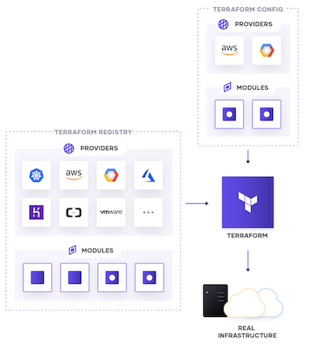

Terraform 101
Terraform HCL
Terraform is written in HCL (Hashicorp Configuration Language). Which is very JSON like but more human readable
An example resource to create an EC2 instance
resource "aws_instance" "app_server" {
ami = "ami-830c94e3"
instance_type = "t2.micro"
tags = {
Name = "TerraformDemo"
}
}
Terraform Basic Workflow

- You write your infrastructure in configuration files (.tf files)
- You run the "init" command to initialize terraform
- You run the “plan” command
- Terraform analyzes the infrastructure compared to your configuration and creates a plan that will create, update, or destroy resources as necessary
- After reviewing the plan, you run the “apply” command. Terraform executes the plan
Terraform State
The primary purpose of Terraform state is to store bindings between objects in a remote system and resource instances declared in your configuration
- keep track of metadata
- determine which changes to make to your infrastructure
- improve performance for large infrastructures
Tip
Remote state allows teams to work together while using remote locking as a measure to avoid two or more different users accidentally running Terraform at the same time, and thus ensure that each Terraform run begins with the most recent updated state.
Terraform Providers and Modules
- Providers  are the plugins that Terraform uses to manage resources. Every supported service or infrastructure platform has a provider that defines which resources are available and performs API calls to manage those resources.
- Modules are reusable Terraform configurations that can be called and configured by other configurations. Most modules manage a few closely related resources from a single provider. You can create your own modules or use modules from the Terraform registry
Note
We won't cover modules but they are a great way create re-useable building blocks when creating your infrastructure and highly encourage you to learn about modules